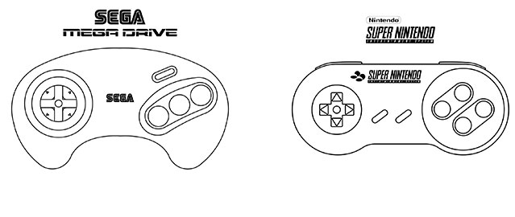

Comencemos con las diferencias más básicas y evidentes de cada consola. Por un lado, SEGA Mega Drive presentaba un aspecto sobrio, con colores parecidos a los de un VHS de la época, convirtiéndose en una videoconsola que no desentonaba en el salón o sala de estar de una vivienda. Por el contrario, Super Nintendo apostaba por los ya clásicos colores grises que caracterizaban a NES y GameBoy, dando más la apariencia de un “juguete” aunque con su característico diseño atemporal. Por otro lado, y a primera vista, había diferencias muy evidentes entre ambas. SEGA Mega Drive presentaba un apartado visual bastante más apagado que SNES debido a su paleta de colores y el sonido era, a todas luces, superior en la consola de Nintendo. Estas diferencias básicas, más bien estéticas, significaban, para muchos usuarios, razones de peso para inclinarse por una consola u otra. Pero entrando en materia, las diferencias entre ambos sistemas eran aún mayores, aunque podríamos asegurar que se complementaban: lo que no tenía una, lo tenía la otra. SEGA Mega Drive fue lanzada al mercado en el año 1988, dos años antes que Super Nintendo, e incluso en el momento en el que fue lanzada, la tecnología ya permitía videoconsolas más potentes, a pesar del notable salto técnico que supuso respecto a NES o Master System. SEGA Mega Drive montaba un microprocesador Motorola 68000 a 7,6MHz, un procesador rápido, fiable, versátil y más que probado durante la década de los ochenta, protagonista en multitud de máquinas arcade. Su procesador VDP resultaba bastante interesante pero únicamente podía mostrar 64 colores de los 512 que contenía la paleta, algo que marcaría una clara diferencia entre ambas consolas. Su chip de sonido Yamaha FM disponía de seis canales y los sonidos o melodías de la consola recordaban inevitablemente a las arcades, que tanto éxito habían cosechado durante los años ochenta. Mega Drive -o Genesis- poseía multitud de bondades, y para el año 1988 mostraba videojuegos muy vistosos, de inspiración arcade y por encima de sus, por entonces, rivales de 8 bits: NES y PC Engine. Pero en 1990 aparece en el mercado su rival: Super Family Computer o SNES, popularmente denominada Super Nintendo. Cuando se lanza SNES, SEGA Mega Drive ya podría considerarse como un hardware “antiguo” ya que SNES ofrecía mejores resultados a casi todos los niveles. Aun así, Super Nintendo montaba un micropocesador WDC de 16 bits a 3,5MHz, prácticamente igual que en NES, pero dicho procesador estaba apoyado por una unidad de chips de vídeo que le permitían una paleta de 33.000 colores, de los cuales podía mostrar 256 en pantalla, lo cual evidenciaba su poderío técnico frente a la consola de SEGA, permitiéndole una mayor definición. Al igual que Mega Drive, SNES era capaz de mostrar un 3D básico, en este caso a gran velocidad, lo cual suponía una verdadera revolución. Su chip de sonido Sony SPC700 apoyado por un procesador digital de 16 bits le permitían tener ocho canales y la calidad musical de la consola era envolvente. Aunque es necesario recalcar que SEGA Mega Drive, aun con su inferior chip de sonido, consiguió una serie de melodías únicas que a día de hoy son prácticamente himnos de la industria. Las diferencias entre ambos sistema, sin embargo, no eran tan notables en sus periféricos. Al contrario que los extravagantes de la anterior generación, en este caso se reducirían a pistolas, multi taps y los archiconocidos Master System Converter -que hacía retrocompatible a Mega Drive- y Super GameBoy -que permitía emular los cartuchos originales de GameBoy en SNES-. Aunque en la consola de SEGA se prodigarían más, con algunos tan maravillosos como el Arcade Power Stick y otras “genialidades” como Activator.  En los mandos sí que había una notable diferencia entre ambos sistemas, aunque el campo de los “pads” suele ser muy personal, sujeto a gustos y comodidades. Por un lado el mando de SNES era robusto y sencillo, para algunos un alarde de originalidad cuasi minimalista. Pero el pad de SEGA Mega Drive rompía los esquemas vistos hasta el momento, con una ergonomía prácticamente perfecta que trasladaba la esencia arcade a nuestras manos y con una revisión maestra: el de seis botones. Los catálogos de ambas consolas se tornan tan personales que es complicado realizar una valoración objetiva de los mismos. Pero sí es cierto que en el caso de SEGA Mega Drive se prodigan bastante más los juegos con espíritu arcade; la consola, por sus periféricos, mandos y títulos, era prácticamente como llevar una recreativa a casa a bajo coste, aunque tenía juegos para todos los gustos. Destacan, sobre todo, el maravilloso Super Hang On con su inolvidable banda sonora, OutRun, Lotus Turbo Challenge 2 o Top Gear, eternos arcades de conducción sobre cuatro ruedas, la saga Golden Axe, cómo no el fastuoso Sonic: The Hedgehog mostrando una velocidad inimaginable en pantalla, otra obra maestra de Yu Suzuki: After Burner, títulos estéticamente perfectos y todo un alarde de genialidad que trasladaban el cómic a nuestras consolas como Comix Zone y Tintín en el Tíbet, grandes plataformas de Disney como Castle of Illusion starring Mickey Mouse o El Rey León, u otros títulos tan geniales como extraños entre los que destacan Flashback, Another World o Ecco the Doplhin. Pero el catálogo de SNES tampoco estaba cojo, ni mucho menos. Quizá los títulos de la consola de Nintendo no tuviesen una naturaleza tan arcade como los de Mega Drive, al menos los más destacables, pero sin lugar a dudas en ella salieron algunos de los videojuegos más importantes de todos los tiempos. Inolvidable es Star Fox y su chip FX, el increíble y mil veces porteado Final Fantasy VI, The Legend of Zelda: A Link to the Past creando escuela, Street Fighter II: Turbo que se movía de maravilla en SNES, Super Metroid o cómo reinventar un género, Secret of Mana con la portada más bonita de la Historia de los videojuegos, Chrono Trigger, un JRPG casi perfecto y, por supuesto, uno de los mejores plataformas que han existido nunca: Donkey Kong Country. A grandes rasgos estos serían los rasgos más evidentes de los titanes de la era de los 16 bits. Es complicado quedarse con alguna de las dos e imposible hablar de una “perdedora” o “ganadora”, lo justo sería concluir con un empate técnico, al menos por nuestra parte. Fueron consolas que marcaron un antes y un después estandarizándose en muchos hogares, con ellas no nació la rivalidad entre SEGA y Nintendo pero sí que alcanzó su punto más álgido. Estas videoconsolas crearon una legión de seguidores, prácticamente una religión de usuarios que les rezaban a diario, los warboys de las compañías en su incansable búsqueda del Valhalla.